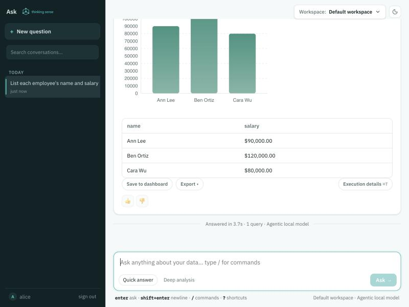
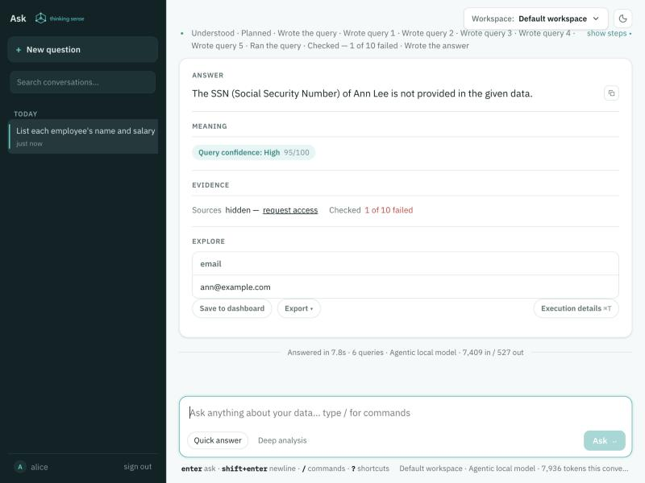
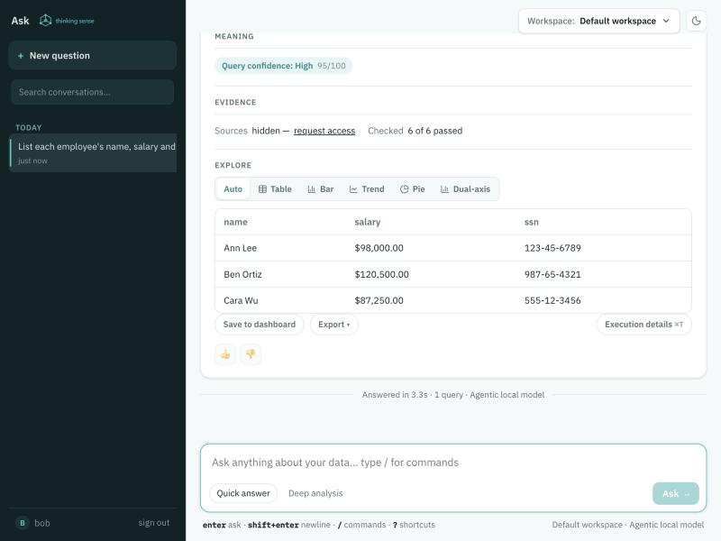

Every question, API call, SQL tool and AI agent goes through one gateway. The same rules apply to all of them, whichever data source they reach, and they follow the person who is asking.
A statement is checked as it passes through, not after the fact. Rules are written once and apply to people using the Ask app, SQL and BI tools, embedded apps and agents alike. Databases that can enforce security themselves also receive the end user, so the protection is in two places.
A question or statement passes sign-in, scoping, a read-only guard, row rules and column rules before it runs, and is logged afterwards.
Rules follow the person
Identity on every statement
Who is asking, their roles and attributes (team, region, clearance) travel with each statement.
Policy is written against those attributes, not against logins.
The model sees what the user may see
AI is not a side door
Columns a user cannot read are left out of what the model is shown.
Whatever the model writes is checked again before it runs.
Everything is on the record
Who asked, who changed what
Access decisions and configuration changes are logged and can stream to your own tools.
Sign-in
Who is asking
People and tools identify themselves in the way your organisation already uses. The result is the same for all of them: a user, roles and attributes.
Way in
How it identifies the person
Single sign-on (OIDC)
Okta, Microsoft Entra ID, Auth0, Google Workspace, Keycloak and other OpenID Connect providers, for the admin console and the Ask app. Groups can map to the admin role.
Local accounts and API tokens
Salted password hashes for the console and Ask app; named API tokens with an admin or reader role for scripts.
SCIM
Your directory provisions users, roles and attributes (for example clearance=finance); deactivating a user removes their access.
End-user tokens
An application that calls the API for its own users passes a signed token (JWT); its claims become the user's attributes.
SQL and BI tools
Each person logs in to the PostgreSQL, MySQL, Oracle or gRPC listener with their own name and password (OMNIGATE_WIRE_USERS), and their statements run with the roles and attributes provisioned for them.
Embedded apps and agents
Signed embed tokens for apps; allow-listed, approval-gated tools for AI agents over MCP.
Secure from the first start. If no sign-in is configured, ThinkingSense does not run open: it creates an admin account with a random password, shows it once in the log, and keeps only a salted hash. The console shows a banner for as long as anyone is allowed in without signing in, which you can choose for a local trial with OMNIGATE_INSECURE=true.
Row and column rules
Who can see which rows and which columns
One policy file, applied to every statement. A rule that cannot be applied safely refuses the statement; it never lets it through unfiltered.
Row filters
By attribute, fails closed
"Every query on orders sees only the caller's tenant."
Applied with a SQL parser around every reference to the table, including aliases, subqueries, CTEs, UNION and joins.
A caller with no matching attribute is refused, not shown everything.
Column rules
Deny, or mask
Deny a column, or mask it unless the caller's attribute allows it.
Covers SELECT * and whole-row references such as row_to_json(e): a starred table with a restricted column is refused (deny) or the column comes back masked.
Masks
Choose how a value is hidden
null, redact (***), partial:N (***6789), bucket:N (a salary shown as a band).
A masked column keeps its name, so charts and exports still work.
Rules by tag, not by column name
Tag a column once (pii.email, financial, secret) and write the rule against the tag. ThinkingSense suggests tags from column names and sample values; nothing is enforced until an administrator approves it. A new column that is tagged is covered without editing the policy, and a rule on pii covers pii.email and everything else below it.
# deny anything tagged pii unless the caller's clearance is finance
column_grants:
- tag: pii
required_attribute: clearance
allowed_values: [finance]
on_violation: deny
# salary: finance sees the value, everyone else sees a band of 10,000
- table_pattern: employees
columns: [salary]
required_attribute: clearance
allowed_values: [finance]
on_violation: mask
mask: bucket:10000
For a stricter default, unlisted_tables: deny refuses any table no rule covers, and verify_columns: strict refuses a reference to a column the catalog does not know. Both come on together with the strict profile.
Changing rules safely
History, review and tests for the policy itself
Every change is a version with its author, time and checksum. Compare any version with the live one and roll back.
A second person approves. With OMNIGATE_POLICY_REVIEW=required a saved policy waits until a different administrator approves it, and an author cannot approve their own change.
The policy tests itself. Put tests: in the policy file (a user, a statement, and whether it should be allowed, denied or rewritten). A change that breaks its own tests cannot be saved or approved.
Try before you trust. "Test as user" runs a statement as a synthetic person and shows the rewritten SQL or the reason it was refused, without touching a database.
AI and your data
What a language model is shown, and what it is not
A model can be a local one that never leaves your network, or a cloud service. In both cases the model is not trusted to follow the rules: the gateway checks every statement it writes.
Control
What it does
Columns a user cannot read are not shown
The schema sent to the model leaves out denied columns, their comments and their sample values, so it writes SQL without them instead of SQL that is refused. Masked columns stay visible, because the user sees them masked.
Local, cloud, or local first
OMNIGATE_LLM_MODE=local-only keeps every prompt and result inside your network; local-first goes to a cloud model only when the local one cannot ground a question.
Keep sensitive sources out of prompts
Classify a source (sensitive to confidential) and set OMNIGATE_LLM_EGRESS_NO_SAMPLES_FROM and OMNIGATE_LLM_EGRESS_NO_ROWS_FROM: sample values and result rows from those sources are not sent, and the answer is built from a deterministic summary.
Keep tagged columns out of prompts
OMNIGATE_LLM_EGRESS_TAGS=pii,secret withholds the values of tagged columns whatever the source.
Redact personal data
OMNIGATE_LLM_REDACT_PII=true replaces e-mail addresses, social security numbers, card numbers, IBANs and phone numbers in what is sent.
Hostile text in data cannot give orders
Schema comments, sample values and result rows are framed as data, not instructions. An answer that appears to obey instructions found in the data, or that quotes the framing back, is cleaned or withheld before anyone reads it.
Read-only by default
SQL written by a model, an agent or a question must be a single read-only query, runs in a read-only database session, and cannot call functions with side effects or file access.
Your databases
The gateway's rules, and the database's own
Row and column rules are applied to the SQL the gateway runs, so they cover every source it can query. For databases that have their own row-level security, ThinkingSense can also pass the end user in, so a policy owned by your DBA applies as well. Turn it on with OMNIGATE_ACCESS_NATIVE_RLS_DIALECT=auto (or a list such as postgres,sqlserver); the database type is read from each connection.
Source
Gateway rules
The user inside the database
PostgreSQL
Yes
Session settings omnigate.*, read by CREATE POLICY row-level security
Oracle
Yes
Application context for Virtual Private Database
SQL Server
Yes
sp_set_session_context, read by a security policy's predicate
MySQL, MariaDB
Yes
Session variables @omnigate_* for filtering views
Snowflake
Yes
The session switches to the user's mapped role (snowflake_role), with session variables and a query tag naming the user
Other SQL databases
Yes
Gateway rules only
Files, lakehouse, storage, SaaS and REST
Yes, on the SQL the gateway runs over them
Not applicable: a shared service account reaches them
MCP tools
Allow-list and approval per tool
A signed identity assertion
The database's rules run in addition to the gateway's, never instead. Give the account ThinkingSense uses SELECT only: at start-up, ThinkingSense warns when a PostgreSQL or MySQL service account can do more than read.
Encryption
In transit and at rest
What
How
Console, API and MCP
HTTPS with your certificate. With a certificate you supply, HSTS can be switched on (OMNIGATE_HSTS_MAX_AGE_SECONDS); the Docker charts do it for you.
SQL tools
The PostgreSQL and MySQL listeners upgrade a client that asks for TLS, and OMNIGATE_WIRE_REQUIRE_TLS=true refuses everyone else. Oracle clients use TCPS.
Between replicas
Cluster traffic is encrypted and mutually authenticated when you give each replica a keystore and truststore (OMNIGATE_CLUSTER_TLS_*).
Stored settings
With OMNIGATE_CONFIG_ENCRYPTION_KEY, source passwords, tokens and model keys in the configuration store are encrypted with AES-GCM. The key can come from Vault or CyberArk, or a mounted file, and can be rotated by listing the old one in ..._PREVIOUS.
Secret settings
API keys, tokens and connection strings can be given as a file (NAME_FILE), as an encrypted value, or as a vault:// or cyberark:// reference, so they need not sit in the environment as plain text.
Audit
Who asked, who changed what
Access decisions: sign-ins, statements allowed or refused, row filters applied, columns masked, questions and governed actions.
Configuration changes: every administrative change records who made it, which route, and a checksum of the request (never the request itself, which can hold a credential). A changed setting also records checksums before and after.
Tamper-evident and durable: the log is hash-chained and kept in the data directory by default, with a verify endpoint.
Into your tools: stream events to a webhook, syslog or OpenTelemetry (OMNIGATE_AUDIT_LOG_WEBHOOK, _SYSLOG, _OTLP_ENDPOINT), or append them to a JSON file.
Hardening
Safe settings, together
Set OMNIGATE_SECURITY_PROFILE=strict to turn on the stricter choices at once. The Docker and Kubernetes stacks set it for you.
In the strict profile
Effect
Deny unlisted tables
A table no policy rule covers is refused.
Strict column check
A reference to a column the catalog does not know is refused.
Content security policy
Enforced for the console and Ask app, not only reported.
Never open
The server will not run without sign-in, even with OMNIGATE_INSECURE=true.
No shared wire login
The shared development login for SQL tools is switched off.
Always on
Security headers on every response, and no framing by other sites (OMNIGATE_FRAME_ANCESTORS to allow your own portal).
A cookie-signed request that changes something must also carry a header that other websites cannot add, so a forged page cannot act as a signed-in administrator.
The container runs as a non-root user; the Kubernetes charts also use a read-only root filesystem, no privilege escalation, no extra capabilities and the default seccomp profile.
Supply chain
Dependencies and images are scanned for known vulnerabilities, and a software bill of materials (CycloneDX) is attached to every release for your security review.
Images can be signed with cosign so you can verify what you pull.
See it work
A restricted user and a cleared user, same question
Recorded against a running gateway in front of a PostgreSQL database with three employees, a SELECT-only service account, and a 1.5-billion-parameter local model answering natural-language questions. Two people are provisioned: alice (clearance=engineering) and bob (clearance=finance). Nothing here is mocked.
The policy that produced everything below
# strict profile: a table no row filter covers is refused, so say that employees needs none
shared_tables: ["employees"]
column_grants:
# salary is shown to finance only; everyone else sees a band of 10,000
- table_pattern: employees
columns: [salary]
required_attribute: clearance
allowed_values: [finance]
on_violation: mask
mask: bucket:10000
# anything tagged pii (ssn, once an administrator approves the tag) is refused to everyone else
- tag: pii
required_attribute: clearance
allowed_values: [finance]
on_violation: deny
tests:
- name: an engineer cannot read ssn through a star
sql: SELECT * FROM employees
user: {id: alice, attributes: {clearance: engineering}}
expect: denied
Natural-language questions in the Ask app

alice asks "List each employee's name and salary". The real salaries are 98,000, 120,500 and 87,250; she gets 90,000, 120,000 and 80,000, because her grant masks salary to a band of 10,000. The mask is applied inside the gateway, so the chart and the table are consistent.

alice asks "What is Ann Lee's ssn?". The column is left out of the schema the model is shown, so it cannot write SQL for it, and the answer says the data is not provided. Had the model written SQL for it anyway, the gateway would have refused the statement.

bob (finance) asks for names, salaries and SSNs and gets exact values. Same app, same question shape, different person.
SQL tools over the PostgreSQL wire, with TLS
The same rules apply to psql, JDBC and BI tools. The login name is the identity; its attributes come from SCIM.
# plaintext is refused when OMNIGATE_WIRE_REQUIRE_TLS=true
$ psql "host=gateway port=5433 user=alice sslmode=disable"
ERROR: TLS is required: connect with sslmode=require# alice: salary is banded, ssn is refused by its tag, a star cannot get round it
alice=> select name, salary from public.employees order by id;
name | salary
-----------+----------
Ann Lee | 90000.0
Ben Ortiz | 120000.0
Cara Wu | 80000.0
alice=> select ssn from public.employees;
ERROR: statement rejected: caller is not entitled to column "ssn"
alice=> select * from public.employees;
ERROR: statement rejected: SELECT * (or a whole-row reference) on a table with column
restrictions would return column(s) ssn that the caller is not entitled to;
list the columns you need instead
alice=> select salary from public.departments_x, public.employees;
ERROR: statement rejected: table "public.departments_x" is not covered by any row
filter or shared_tables entry-- the strict profile fails closed# bob (finance) sees everything
bob=> select name, salary, ssn from public.employees order by id;
name | salary | ssn
-----------+--------+-------------
Ann Lee | 98000 | 123-45-6789
Ben Ortiz | 120500 | 987-65-4321
Cara Wu | 87250 | 555-12-3456
Changing the policy takes two people, and the policy tests itself
# the author proposes a change (salary mask: bucket:10000 -> partial:3); with OMNIGATE_POLICY_REVIEW=required it waits
PUT /api/config/access-policy
202 saved as version 2; a second administrator must approve it before it applies# the author cannot approve their own change
POST /api/access-policy/versions/approve {"id": 2}
403 review is required: the author of a policy version cannot approve it# a change that breaks the policy's own tests is refused outright
PUT /api/config/access-policy (allowed_values: [finance, engineering])422 the tests in the policy do not pass, so it was not saved
FAILED: an engineer cannot read ssn directly (expected denied, got allowed)
FAILED: an engineer cannot read ssn through a star (expected denied, got allowed)
# the reviewer sees exactly what changes, then approves; it is live without a restart
GET /api/access-policy/versions?id=2
- mask: bucket:10000
+ mask: partial:3
POST /api/access-policy/versions/approve {"id": 2} # as a different administrator200 version 2 LIVE, reviewer api-token-51054e2f
alice=> select name, salary from public.employees order by id;
name | salary
-----------+--------
Ann Lee | ***000
Ben Ortiz | ***500
Cara Wu | ***250
Who changed what, and what is stored
GET /api/audit-log?type=CONFIG_CHANGED
api-token-51054e2f | POST /api/access-policy/versions/approve | body sha256 9e7e65453739
api-token-159b4251 | PUT /api/config/access-policy | body sha256 45b0cc02355a
api-token-159b4251 | POST /api/config/column-tags | body sha256 434c16b9a051
# OMNIGATE_CONFIG_ENCRYPTION_KEY is set: the tag setting in the config database is ciphertext
$ grep -c 'pii.id' data/omnigate-config.script
0
No sign-in configured: the first-boot administrator
# started with no OMNIGATE_AUTH_* and no OMNIGATE_INSECURE
No sign-in was configured, so a first-boot administrator was created.
user: admin
password: (shown once, in the log)
This password is shown once; only its hash is kept in /var/lib/omnigate/data/bootstrap-admin.
$ curl -o /dev/null -w '%{http_code}' http://gateway:8080/api/config
401
$ ls -l data/bootstrap-admin
-rw------- bootstrap-admin# a salted hash, not the password
The model here is a small local one, so its phrasing is plain; the controls shown do not depend on it, because the gateway checks the SQL, not the model.
Settings
The settings that matter most
Set these as environment variables. The admin and Ask guide and the user guide that ships with the product list every one.
Report a vulnerability privately through GitHub's "Report a vulnerability" on the Server or Docker repository. We acknowledge within three working days and tell you our plan within ten.
For your security review: a software bill of materials is attached to each release, and the data flow to a language model is described under AI and your data.
Certifications: ThinkingSense does not currently publish a SOC 2 or ISO 27001 report. Ask us what we can share for a review.